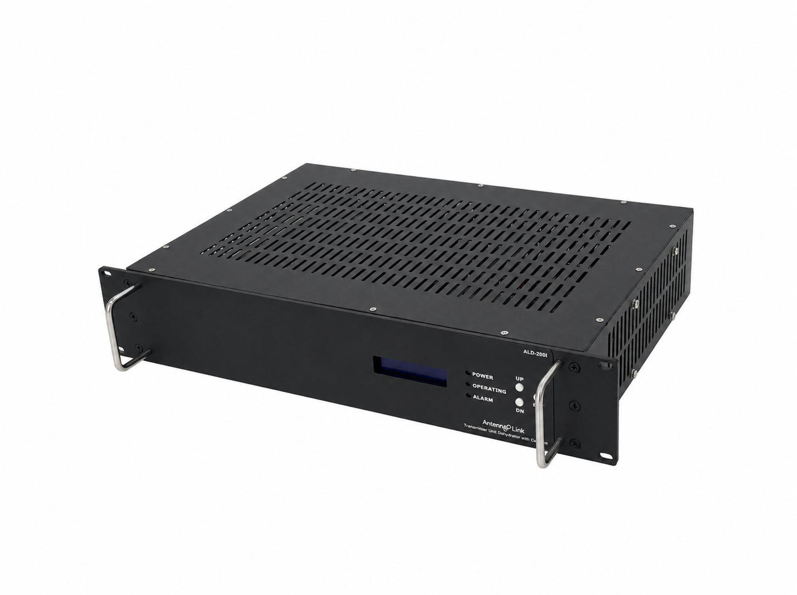
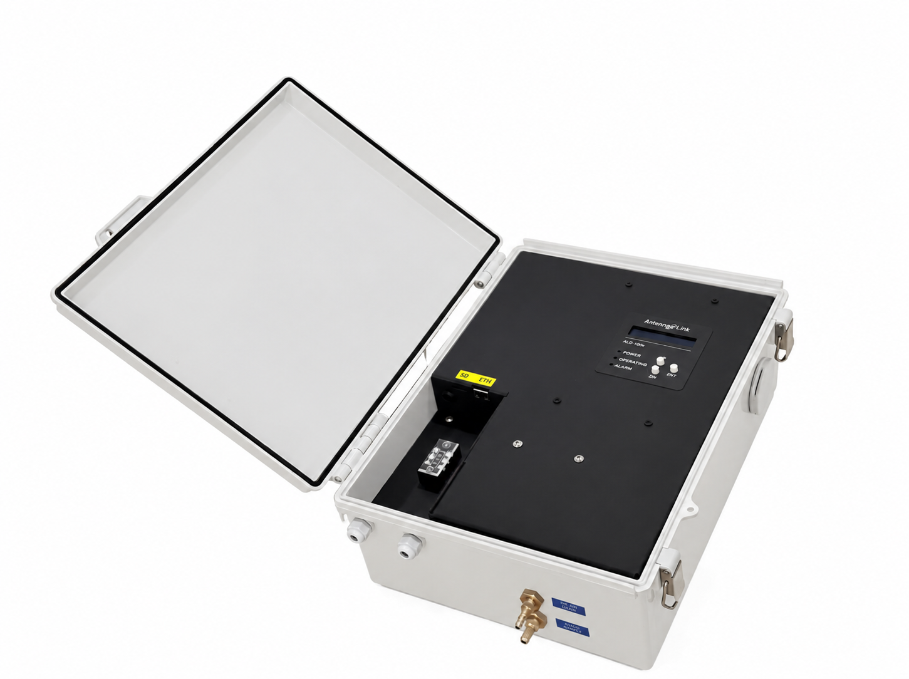

Satellite Antenna Dehydrators
Remove moisture from RF transmission lines to help protect against corrosion and maintain system performance.
Satellite Antenna Dehydrators
Explore ALD-200 indoor and outdoor dehydrators for satellite antenna applications, with humidity and dew point monitoring, OEM integration, and technical support.

Featured Product · ALD-200 Series
The ALD-200 Series is a transmission line dehydrator designed to remove moisture from RF transmission lines, helping maintain stable system performance and long-term protection against corrosion. It supports Ethernet-based monitoring, an integrated LCD display, and front-panel control.
Rack-mount indoor version designed for telecom, RF, and broadcast system environments.
Outdoor enclosure version designed for field installation and exposed operating environments.

Designed to remove moisture from RF transmission lines and support stable long-term system performance.
Supports Ethernet-based remote monitoring with HTTPS communication.
Integrated LCD display and front-panel buttons for status review and operation.
Supports alarm and condition monitoring including dew point, pressure, and temperature status.
Available in 19" rack-mount indoor format or outdoor enclosure version for different installation needs.
Built for easier field diagnosis and maintenance in practical operating environments.
Dew Point
max -40˚ F/C
Flow Rate
0.8 to 1.0 L/min
Power
100 to 240 VAC
Protocol
HTTPS / REST API
Select moisture-control equipment for your installation and review operating requirements with our team.
Remove moisture from RF transmission lines to help protect against corrosion and maintain system performance.
Compare the ALD-200i rack-mount model and ALD-200e outdoor enclosure for your installation environment.
Review dehydrator dew point, pressure, and temperature status through local controls and Ethernet monitoring.
Work with Antenna Link on dehydrator selection, evaluation equipment coordination, and integration requirements for your own equipment.
Tell us the installation environment, required pressure and flow, power supply, monitoring interface, quantity, and schedule.
Discuss the suitable ALD-200 model, evaluation equipment availability, and dehydrator interface requirements with our team.
Review product documentation, installation questions, maintenance needs, and customer feedback for the dehydrator.
Antenna Link focuses on U.S. sales and support for Wiworld satellite antenna dehydrators. Wiworld manufactures the ALD-200 Series; Antenna Link helps customers with product selection, evaluation coordination, dehydrator OEM integration, and technical support.
Email our team with your ALD-200 requirements or support questions. For product selection, include the installation environment, required pressure and flow, quantity, and expected schedule. For service, include the model, serial number, and any alarm details.
Product selection, quotations, evaluation equipment, and dehydrator integration.
sales@antennalink.comALD-200 installation, operation, monitoring, maintenance, and troubleshooting.
service@antennalink.comThese links open your email application. Send your message from that application to contact our team.
Download ALD-200 product documents or contact us for dehydrator application and integration information.
Product overview, key features, indoor/outdoor type information, and main specifications for the ALD-200 Series.
ALD-200i / ALD-200e · Product datasheet
Installation, operation, maintenance, and troubleshooting instructions for the ALD-200 Series.
ALD-200i / ALD-200e · User manual
Contact our support team for ALD-200 installation, operation, maintenance, and dehydrator integration questions.
ALD-200 product and application support